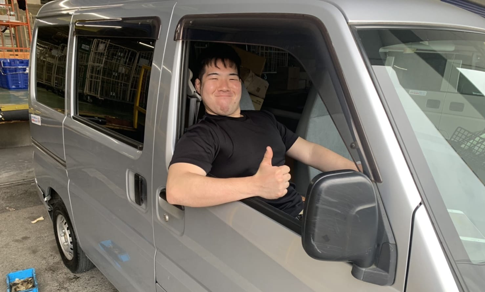

栃木県 那須塩原
届ける、つなぐ、
整える。
生鮮食品の直送、野菜・果物の販売、人材紹介・ビジネスマッチング、お墓のお掃除代行。
暮らしと事業に必要な仕事を、自社の手で運ぶ会社です。
- 事業領域
- 4領域
- マッチング登録
- 200社以上
- 産地からのお届け
- 最短翌日

自社便で、産地から食卓まで。
01 About
暮らしと事業に、
必要な仕事を。
株式会社KMコーポレーションは、栃木県・那須塩原を拠点とする会社です。生鮮食品の直送、野菜・果物の販売、企業同士をつなぐ人材紹介・ビジネスマッチング、そして、お墓のお掃除代行。4つの事業を通じて、暮らしと事業に必要な仕事を、自社で引き受けています。
一見ばらばらに見える事業も、私たちの中では一本でつながっています。自分たちの手で運び、自分たちで届けること。それを積み重ねることで、地域とお客様の双方に必要とされる会社でありたいと考えています。
-
Direct
自社で運び、自社で届ける
仲卸や仲介に頼らない、シンプルなやり方。だから鮮度も価格も、私たちの責任で守れます。
-
Multiple
4つの事業で、ご縁を広げる
食品・販売・人材・暮らし。領域をまたぐからこそ、お応えできるご相談があります。
-
Trust
積み重ねてきた、お取引
JR東日本、イオン、セブン&アイ。大手流通との継続したお取引が、仕事の証明です。
02 Business
私たちの、4つの仕事。
産地から食卓まで運ぶ仕事も、企業と企業をつなぐ仕事も、ご先祖様のお墓を整える仕事も。誰かに頼まれて、誰かのために動くという点で、私たちの中では同じ仕事です。
-
01
Fresh Direct
生鮮食品の直送便
那須塩原の無農薬野菜、果実、お米をお届けしています。前日の収穫のお手伝いから、収穫・納品まで全て自社で行うため、翌日には新鮮なまま、低価格で提供することが可能です。
- 那須の高原野菜標高差・寒暖差が育てる、みずみずしい味わい
- 季節の果実旬を逃さず、収穫したてをそのままお届け
- 那須塩原のお米豊かな土壌と清流が育む一粒
-
02
Vegetable & Fruit
野菜・果物販売
日頃から取引している農家さんの地域活性化を目指して、自社での販売を拡大強化しております。自社便にて商品を直送・販売までしておりますので、低価格で販売することが可能です。季節ごとに販売種類は変わりますので、お気軽にご相談くださいませ。
- イベント出店京都物産展・定期マルシェなどに出店
- 法人卸売大手流通グループとの安定したお取引
- 季節商品旬に合わせた品目をご提案
-
03
Business Matching
人材紹介・
ビジネスマッチング支援 企業ニーズに最適なビジネス交流会を、月一度全国にて開催しております。販路開拓・アウトソーシング・経営課題の解決・オープンイノベーションなど、企業と企業が出会うための場を運営しています。
- 販路開拓
- アウトソーシング開拓
- 経営課題の解決
- オープンイノベーション
登録社数200社以上
-
04
Grave Care
お墓お掃除
代行サービス 遠方に住んでいるため頻繁にお参りできない。お仕事が忙しく時間がとれない。お身体のお悩みから十分に掃除ができない。様々な理由からお墓のお手入れでお困りの方に代わり、こころを込めて丁寧にお掃除させていただきます。
- 洗浄・清掃墓石・周辺・花筒まで丁寧に
- お参り代行お花・お線香もこころを込めて
- 写真報告作業前後のお写真でご報告
03 Direct Supply
仲卸も、卸も、介さない。
生鮮食品の直送便では、産地と納品先を自社で一本につないでいます。中間業者を入れないことで、鮮度・価格・スピードの3つを両立できます。
一般的な流通
- 生産者様
- 農協様
- 卸売業者様
- 仲卸業者様
- 小売店様
- お客様
経由する事業者が多く、そのぶん時間とコストが積み上がります。
KMコーポレーション
- 生産者様
- 自社便で直送
- 小売店様
- お客様
収穫したてを、そのまま。だから翌日着・低価格・高鮮度が両立します。
-
01
翌日着の鮮度
収穫から最短翌日でお届け。畑のおいしさを、そのまま食卓に。
-
02
無農薬・高原野菜
標高差と寒暖差、豊かな土壌が育てる、みずみずしい一品。
-
03
低価格を実現
中間マージンを徹底的にカット。生産者にもお客様にも、うれしい価格を。
04 Clients
主な販売先・お取引先。
大手流通グループから、各地の物産展・マルシェまで。継続してお取引いただいていることが、私たちの仕事の確かさを示しています。
- 01東日本旅客鉄道株式会社JR East
- 02イオン株式会社AEON Co., Ltd.
- 03株式会社セブン&アイ・ホールディングスSeven & i Holdings
- 04京都物産展Kyoto Bussan Exhibition
- 05定期イベント（マルシェ）Regular Marché Events
05 Message
頼まれた仕事を、
ていねいに。生鮮食品の直送も、野菜・果物の販売も、企業さん同士をつなぐ仕事も、お墓のお掃除も。ジャンルはちがっても、誰かに頼まれて、誰かのために動くという仕事の本質は同じだと思っています。
KMコーポレーションは、那須塩原を拠点に、暮らしと事業のあいだに必要な仕事を引き受ける会社です。ご相談をいただいたお仕事を、ひとつずつ、ていねいに。これからもそうやって続けていきます。
06 Team
4つの仕事を、支える体制。
配送、販売、現場、マッチング、受付、統括。役割は違っても、ひとつの会社のメンバーとして、それぞれの持ち場に取り組んでいます。
- 配送Delivery
那須塩原から首都圏まで自社便を運行し、生鮮品を翌日に届けます。
- 販売Sales
大手取引先への卸売、物産展・マルシェなど、販売の現場を引き受けます。
- 現場Field
農家さんとの連携から、お墓清掃の立ち合いまで、外回りの仕事を担います。
- マッチングMatching
月一度の交流会を設計・運営し、200社を超える企業のご縁を結びます。
- 受付Customer Care
ご注文・お問い合わせの窓口として、ご相談を整理し社内へつなぎます。
- 統括Director
4事業の全体統括。取引先・地域との関係づくりまで担うまとめ役です。
07 Company
会社概要
- 会社名
- 株式会社KMコーポレーション
- 代表事業
- 生鮮食品直送便／野菜・果物販売／人材紹介・ビジネスマッチング支援／お墓お掃除代行サービス
- 主要産地
- 栃木県 那須塩原
- 主な販売先
- 東日本旅客鉄道株式会社、イオン株式会社、株式会社セブン&アイ・ホールディングス 他
- 登録社数
- 200社以上（ビジネスマッチング）
- 事業エリア
- 全国
08 Contact
お気軽に、ご相談ください。
配送のご依頼、お取引のご相談、マッチング会の参加お申し込みまで。まずはお問い合わせください。
ご注文・お取引のご相談・マッチング会のお申し込み
受付時間
平日 9:00 – 18:00土日祝はお休みをいただいております。メールでのご連絡は随時承ります。